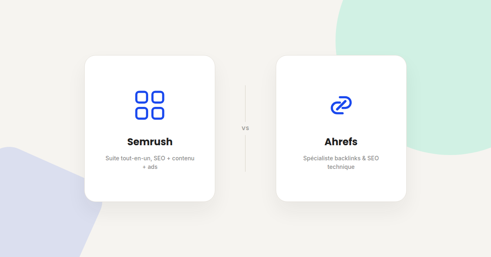
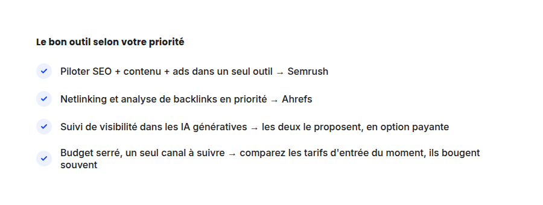

Semrush vs Ahrefs : quel outil SEO choisir en 2026
Je suis utilisateur Semrush au quotidien, donc autant le dire tout de suite : certains liens de cet article sont affiliés. Ce qui ne m'empêche pas de vous dire où Ahrefs fait objectivement mieux — sinon cet article ne vous serait d'aucune utilité.

On me pose régulièrement la question en audit : Semrush ou Ahrefs ? La vraie réponse est qu'ils ne couvrent pas le même périmètre — l'un est une suite marketing large, l'autre un spécialiste du lien retour et du SEO technique. Voici comment je les compare avec des clients, poste par poste.
Le positionnement des deux outils
Semrush s'est construit comme une suite tout-en-un : recherche de mots-clés, audit technique, suivi de position, mais aussi création de contenu assistée par IA, gestion des réseaux sociaux et analyse des campagnes publicitaires (lien affilié : je peux toucher une commission si vous vous abonnez via ce lien, sans coût supplémentaire pour vous).
Ahrefs, à l'inverse, reste concentré sur le cœur du SEO : son index de backlinks est le plus large et le plus fréquemment mis à jour du marché (rafraîchi toutes les 15 à 30 minutes), ce qui en fait la référence pour l'analyse de netlinking et de la concurrence sur ce terrain précis.
Là où Semrush prend l'avantage
- Vous pilotez plusieurs canaux dans le même outil. Si vous suivez SEO, contenu et campagnes publicitaires ensemble, la couverture plus large de Semrush évite de jongler entre plusieurs abonnements.
- Vous voulez de l'assistance IA pour la production de contenu. Semrush a investi davantage sur les fonctionnalités de génération et d'optimisation de contenu assistées par IA, au-delà du seul audit SEO.
- Vous débutez et voulez un seul tableau de bord. La logique tout-en-un réduit la courbe d'apprentissage par rapport à l'empilement de plusieurs outils spécialisés.
Là où Ahrefs prend l'avantage
- L'analyse de backlinks est votre priorité. L'index d'Ahrefs est reconnu comme le plus complet et le plus frais du marché — un vrai avantage pour évaluer un profil de liens ou une stratégie de netlinking concurrente.
- Vous voulez un outil recentré sur le SEO pur. L'interface d'Ahrefs, moins chargée de fonctionnalités annexes, convient bien à un usage SEO/contenu sans besoin de piloter aussi les ads ou le social.
- Le suivi des mises à jour de contenu existant compte pour vous. Ahrefs propose un bon suivi des pages qui perdent en performance, utile pour prioriser les refontes de contenu.

Et pour le suivi de visibilité dans les IA génératives (GEO) ?
Les deux outils ont ajouté un module de suivi de présence dans les réponses de ChatGPT, Perplexity et les AI Overviews de Google — Ahrefs avec Brand Radar, Semrush avec son propre module équivalent. Dans les deux cas, c'est une option payante en plus de l'abonnement de base : vérifiez le tarif actuel avant de l'inclure dans votre budget, ces grilles évoluent fréquemment.
Et le prix ?
Les deux se situent dans une fourchette d'entrée assez proche l'un de l'autre, autour de 130 à 140 $/mois pour le premier palier. Je ne donne pas de chiffre plus précis ici : les grilles tarifaires changent régulièrement des deux côtés, et un chiffre figé dans un article de blog est vite obsolète. Le réflexe à avoir : comparez les tarifs à jour directement sur Semrush et Ahrefs au moment de trancher, plutôt que sur un chiffre lu ailleurs.
Mon usage réel
Sur mes missions, j'utilise Semrush au quotidien parce que je pilote SEO, contenu et parfois SEA pour mes clients dans le même outil, ce qui réduit le nombre d'abonnements à justifier. Sur un audit de netlinking pur ou une analyse concurrentielle poussée sur les backlinks, je vais régulièrement croiser avec les données Ahrefs : les deux outils ne sont pas mutuellement exclusifs, et beaucoup de consultants SEO utilisent les deux selon la mission.
FAQ
Faut-il vraiment les deux outils, ou un seul suffit ?
Pour un usage généraliste (SEO + contenu + suivi de position), un seul suffit largement. Le cumul se justifie surtout pour une activité de conseil SEO intensive, où croiser deux sources de données sur les backlinks devient utile.
Lequel a les données de mots-clés les plus fiables en France ?
Les deux couvrent bien le marché français, avec des volumes de recherche parfois légèrement différents sur les requêtes de longue traîne. Aucun des deux n'est systématiquement plus précis que l'autre sur ce point.
Le lien vers Semrush dans cet article est-il un lien affilié ?
Oui, il l'est : si vous vous abonnez à Semrush via ce lien, je peux toucher une commission, sans coût supplémentaire pour vous. Le lien vers Ahrefs, en revanche, n'est pas affilié — je n'ai pas de partenariat avec eux, ce qui ne change rien à l'évaluation faite ici.
Besoin d'aide pour choisir votre stack d'outils SEO ?
Pour aller plus loin, voir la page SEO, la page Outils, et la page GEO.
À lire aussi : Netlinking en 2026 : ce qui compte encore pour Google et pour les IA et Le guide complet GEO pour ranker numéro 1 dans les LLMs.
Pour continuer sur ce sujet.